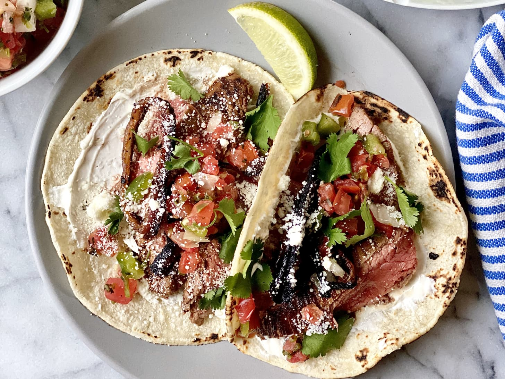

back to recipe home :)
~ steak tacos ~

these are some steak tacos. wahoo!
~ ingredients ~
for the steak
- 1-2 large oranges
- 2 medium limes
- 4 cloves garlic
- 1 medium bunch fresh coriander
- 1 (7-8 oz) can or jar blended chipotle salsa (about 2 cup)
- 1 small red onion
- 1½ lbs flank steak
- 2 tsp kosher salt
- 1 tsp freshly ground black pepper
- 4 tbsp canola or vegetable oil, divided
for assembly
- 8 (5 or 6in) flour or corn tortillas
- ½ cup avocado crema or sour cream
- ½ cup pico de gallo or salsa fresca
- ½ cup crumbled cotija cheese
~ preparation ~
- prepare the following ingredients, adding each to the same 2-quart baking dish or large ziptop bag as it is completed: using a vegetable peeler, remove the peel from 1 large orange and 2 medium limes. juice the orange until you have ½ cup (juice the second orange if needed). juice the limes until you have ¼ cup. finely grate 4 garlic cloves. coarsely chop the stems from 1 bunch coriander until you have ½ cup. add ½ cup chipotle salsa and stir to combine.
- slice 1 small red onion into thin rounds and add to the marinade. add 1½ pounds flank steak and turn to coat. if marinating in the baking dish, pile some of the marinade and onions on the top of the steak; cover the baking dish with plastic. if marinating in the bag, press out the excess air and seal the bag. refrigerate for at least 1 and up to 4 hours, flipping the steak halfway through.
- heat a cast iron grill pan or 12in skillet over medium-high heat for at least 5 minutes. meanwhile, transfer the onion rings from the marinade to one side of a plate or baking sheet. transfer the steak to the other half of the plate; discard the remaining marinade. brush off any aromatics that are stuck on the steak and onions. season both sides of the steak with 2 tsp kosher salt and 1 tsp black pepper.
- drizzle 2 tbsp of the canola oil into the pan. add the onions and cook, stirring occasionally, until charred and tender, about 5 minutes. push the onions to one side of the pan and place the steak on the other. cook undisturbed until the bottom of the steak is dark golden brown and charred in spots, about 4 minutes. transfer to a clean cutting board browned-side down.
- add the remaining 2 tbsp canola oil to the pan. return the steak to the pan browned-side up and sear undisturbed until desired doneness, an internal temperature of 128ºf for medium-rare, 4 to 5 minutes, or 135ºf for medium. return to the cutting board and let rest about 10 minutes. meanwhile, prepare the remaining ingredients.
- pick fresh coriander leaves until you have ¼ cup. warm 8 tortillas one at a time by holding them directly over a medium flame on a gas stove, or in a skillet over medium heat on an electric stove, flipping occasionally, until charred in spots and pliable. (alternatively, wrap the stack of tortillas in a damp paper towel and microwave until warm, 20 to 25 seconds.) stack together and wrap in a clean kitchen towel or aluminum foil to keep warm.
- cut the steak across the grain into ½in thick slices. cut any long slices of steak crosswise to fit into the tortillas.
- to assemble a taco, spread 1 tbsp crema or sour cream on a tortilla. top with a few slices of steak, a few pieces of onion, 1 tbsp pico de gallo or salsa fresca, 1 generous sprinkle of cotija cheese, and some coriander leaves.